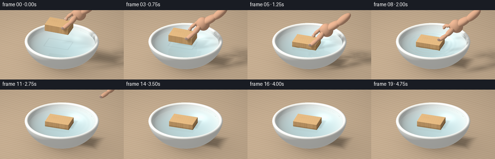
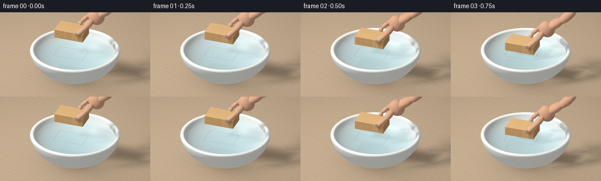

CODING AGENTS AS PIXEL WORLD MODELS
traex/GPT-6.1-Sol · phygen_009
点击播放 · 原生 RGB 像素
逐轮保存的候选
回放视频、检查图与代码变化。
每份候选均可单独播放。实际图片检查记录在下方工具轨迹中。
候选 01播放与检查图
点击播放 · 原生 RGB 像素


展开代码变化
--- 上一保存版本
+++ 本次保存版本
@@ -0,0 +1,420 @@
+"""Procedural RGB animation: a hand gently sets a pine block afloat.
+Only numpy/Pillow and explicit analytic geometry are used.
+"""
+from pathlib import Path
+import numpy as np
+from PIL import Image
+import artifact_io
+
+ROOT = Path(__file__).resolve().parent
+W, H, SS = 256, 144, 3
+RW, RH = W*SS, H*SS
+FAR = 1e6
+rng = np.random.default_rng(417)
+
+def norm(v):
+ return v / np.maximum(np.linalg.norm(v, axis=-1, keepdims=True), 1e-10)
+
+def smooth(a, b, x):
+ t = np.clip((x-a)/(b-a), 0., 1.)
+ return t*t*(3.-2.*t)
+
+CAM=np.array([3.05,-5.55,4.5])
+TARGET=np.array([0.,0.,.96])
+FORWARD=norm(TARGET-CAM)
+RIGHT=norm(np.cross(FORWARD,np.array([0.,0.,1.])))
+UP=np.cross(RIGHT,FORWARD)
+xx,yy=np.meshgrid((np.arange(RW)+.5)/RW-.5, .5-(np.arange(RH)+.5)/RH)
+ORIG=(CAM+xx[...,None]*5.05*RIGHT+yy[...,None]*(5.05*H/W)*UP).reshape(-1,3)
+DIR=np.broadcast_to(FORWARD,ORIG.shape).copy()
+LIGHT= np.array([-3.8,-4.0,7.4])
+
+# A thick glazed ceramic shell with a rolled, rounded lip.
+OUT_C=np.array([0.,0.,1.25]); OUT_R=np.array([1.53,1.53,1.15])
+IN_C=np.array([0.,0.,1.25]); IN_R=np.array([1.40,1.40,.97])
+LIP_Z=1.10
+OUT_LIP=1.53*np.sqrt(1-((LIP_Z-1.25)/1.15)**2)
+IN_LIP=1.40*np.sqrt(1-((LIP_Z-1.25)/.97)**2)
+WATER_Z=1.005
+WATER_R=1.40*np.sqrt(1-((WATER_Z-1.25)/.97)**2)
+RING_R=(OUT_LIP+IN_LIP)*.5
+RING_MINOR=(OUT_LIP-IN_LIP)*.5
+
+def ellipsoid(o,d,c,r,zclip=None,inward=False):
+ q=(o-c)/r; v=d/r
+ a=np.sum(v*v,axis=1); b=np.sum(q*v,axis=1)
+ disc=b*b-a*(np.sum(q*q,axis=1)-1)
+ root=np.sqrt(np.maximum(disc,0))
+ t1=(-b-root)/a; t2=(-b+root)/a
+ valid1=(disc>=0)&(t1>1e-4)
+ valid2=(disc>=0)&(t2>1e-4)
+ if zclip is not None:
+ valid1 &= (o[:,2]+d[:,2]*t1 <= zclip+1e-5)
+ valid2 &= (o[:,2]+d[:,2]*t2 <= zclip+1e-5)
+ t=np.where(valid1,t1,np.where(valid2,t2,FAR))
+ p=o+d*t[:,None]
+ n=norm((p-c)/(r*r))
+ if inward: n=-n
+ return t,n
+
+def torus(o,d):
+ # Exact toroidal distance field, marched within its enclosing sphere.
+ c=np.array([0.,0.,LIP_Z]); radius=RING_R+RING_MINOR+.012
+ q=o-c; b=np.sum(q*d,axis=1)
+ a=np.sum(d*d,axis=1)
+ disc=b*b-a*(np.sum(q*q,axis=1)-radius*radius)
+ t=np.maximum((-b-np.sqrt(np.maximum(disc,0)))/a,1e-4)
+ end=(-b+np.sqrt(np.maximum(disc,0)))/a
+ active=(disc>0)&(end>0); hit=np.zeros(len(o),bool)
+ for _ in range(75):
+ ix=np.flatnonzero(active)
+ if not len(ix): break
+ p=o[ix]+d[ix]*t[ix,None]-c
+ rr=np.sqrt(p[:,0]**2+p[:,1]**2)
+ dist=np.sqrt((rr-RING_R)**2+p[:,2]**2)-RING_MINOR
+ done=np.abs(dist)<.00016
+ hit[ix[done]]=True
+ active[ix[done]]=False
+ go=ix[~done]
+ t[go]+=np.maximum(dist[~done]*.85,.0001)
+ active[go] &= t[go]<end[go]
+ t=np.where(hit,t,FAR)
+ p=o+d*t[:,None]-c
+ rho=np.maximum(np.linalg.norm(p[:,:2],axis=1),1e-8)
+ n=np.column_stack((p[:,0]*(1-RING_R/rho),p[:,1]*(1-RING_R/rho),p[:,2]))
+ return t,norm(n)
+
+# Chamfered block as a convex intersection of face, edge and corner planes.
+BOX_HALF=np.array([.51,.335,.155]); BEVEL=.013
+planes=[]; limits=[]
+for i in range(3):
+ for s in [-1,1]:
+ n=np.zeros(3); n[i]=s; planes.append(n); limits.append(BOX_HALF[i])
+for i,j in [(0,1),(0,2),(1,2)]:
+ for s in [-1,1]:
+ for v in [-1,1]:
+ n=np.zeros(3); n[i]=s; n[j]=v
+ planes.append(n); limits.append(BOX_HALF[i]+BOX_HALF[j]-BEVEL)
+for a in [-1,1]:
+ for b in [-1,1]:
+ for c in [-1,1]:
+ planes.append(np.array([a,b,c])); limits.append(np.sum(BOX_HALF)-2*BEVEL)
+PLANES=np.array(planes); LIMITS=np.array(limits)
+
+def rotmat(yaw,pitch,roll):
+ c,s=np.cos(yaw),np.sin(yaw); rz=np.array([[c,-s,0],[s,c,0],[0,0,1]])
+ c,s=np.cos(pitch),np.sin(pitch); ry=np.array([[c,0,s],[0,1,0],[-s,0,c]])
+ c,s=np.cos(roll),np.sin(roll); rx=np.array([[1,0,0],[0,c,-s],[0,s,c]])
+ return rz@ry@rx
+
+def boxhit(o,d,box):
+ c,R=box
+ q=(o-c)@R; v=d@R
+ enter=np.full(len(o),-FAR); leave=np.full(len(o),FAR)
+ ni=np.zeros(len(o),np.int32); no=np.zeros(len(o),np.int32)
+ ok=np.ones(len(o),bool)
+ for i,(n,h) in enumerate(zip(PLANES,LIMITS)):
+ num=h-(q[:,0]*n[0]+q[:,1]*n[1]+q[:,2]*n[2])
+ den=v[:,0]*n[0]+v[:,1]*n[1]+v[:,2]*n[2]
+ tt=num/np.where(np.abs(den)<1e-10,1e-10,den)
+ low=(den<0)&(tt>enter); hi=(den>0)&(tt<leave)
+ enter[low]=tt[low]; ni[low]=i
+ leave[hi]=tt[hi]; no[hi]=i
+ ok &= ~((np.abs(den)<1e-10)&(num<0))
+ outside=enter>1e-4
+ t=np.where(outside,enter,leave)
+ ok &= (leave>=enter)&(t>1e-4)
+ t=np.where(ok,t,FAR)
+ n=norm(PLANES[np.where(outside,ni,no)]@R.T)
+ return t,n
+
+# Capsules are represented by overlapping anatomically tapered ellipsoids.
+def finger_segment(a,b,r1,r2,kind='skin'):
+ a=np.array(a); b=np.array(b); delta=b-a
+ ez=norm(delta); helper=np.array([0.,0.,1.])
+ if abs(np.dot(ez,helper))>.95: helper=np.array([0.,1.,0.])
+ ex=norm(np.cross(helper,ez)); ey=np.cross(ez,ex)
+ R=np.column_stack([ex,ey,ez])
+ return ((a+b)*.5,np.array([r1,r2,np.linalg.norm(delta)/2+min(r1,r2)*.65]),R,kind)
+
+def oriented_hit(o,d,shape):
+ c,r,R,kind=shape
+ t,n=ellipsoid((o-c)@R,d@R,np.zeros(3),r)
+ return t,n@R.T
+
+def motion(t):
+ # Slow descent, a short settling pause, release, then withdrawal.
+ down=smooth(0,1.30,t)
+ bottom=1.69-.795*down
+ if t>1.30:
+ dt=t-1.30
+ bottom=.895+.016*np.exp(-dt*1.25)*np.sin(dt*7.2)
+ yaw=.18 + .016*smooth(1.6,4.75,t)
+ pitch=.025*(1-down)+.009*np.exp(-max(t-1.30,0)*1.4)*np.sin(max(t-1.30,0)*6)
+ roll=-.018*(1-down)+.011*np.exp(-max(t-1.30,0)*1.2)*np.sin(max(t-1.30,0)*6.3)
+ center=np.array([-.10+.035*smooth(1.6,4.75,t),-.06+.02*smooth(1.6,4.75,t),bottom+BOX_HALF[2]])
+ return (center,rotmat(yaw,pitch,roll))
+
+def hand_geometry(t,box):
+ if t>=2.85: return []
+ center,R=box
+ release=smooth(1.45,1.90,t)
+ withdraw=smooth(1.72,2.85,t)
+ shift=np.array([1.65*withdraw,.36*withdraw,1.55*withdraw])
+ def P(p): return center+R@np.array(p)+shift
+ shapes=[]
+ def ell(p,r,kind='skin',rotation=None):
+ shapes.append((P(p),np.array(r),R if rotation is None else rotation,kind))
+ def seg(a,b,r1,r2):
+ ob=finger_segment(P(a),P(b),r1,r2)
+ shapes.append(ob)
+ # Wrist and palm extend naturally up and to the right, outside the frame.
+ seg([1.28,.34,.99],[.79,.25,.64],.205,.155)
+ seg([1.67,.43,1.36],[1.24,.33,.94],.18,.155)
+ ell([.78,.25,.60],[.275,.22,.29])
+ # Index finger curves around the back edge of the wood.
+ seg([.66,.30,.68],[.42,.37,.48],.084,.081)
+ seg([.42,.37,.48],[.22,.36+.11*release,.26+.16*release],.080,.073)
+ seg([.22,.36+.11*release,.26+.16*release],[.17,.315+.12*release,.12+.18*release],.074,.066)
+ # Thumb makes the opposing grip on the near long side.
+ seg([.68,.07,.53],[.53,-.16-.08*release,.33+.07*release],.12,.105)
+ seg([.53,-.16-.08*release,.33+.07*release],[.29,-.365-.13*release,.12+.13*release],.102,.081)
+ # The remaining three fingers curl gently behind the palm.
+ for j in range(3):
+ y=.43+j*.105
+ z=.60-j*.035
+ seg([.68,y-.10,z+.09],[.51,y,z],.077-j*.008,.073-j*.006)
+ seg([.51,y,z],[.44,y+.025,z-.22],.074-j*.008,.067-j*.007)
+ seg([.44,y+.025,z-.22],[.58,y-.05,z-.27],.064-j*.007,.060-j*.007)
+ # Small, rounded, translucent nails, not flat stickers.
+ nailR=R@rotmat(0,-.40,.30)
+ ell([.287,-.423-.13*release,.164+.13*release],[.065,.014,.081],'nail',nailR)
+ ell([.17,.304+.12*release,.218+.18*release],[.051,.032,.045],'nail')
+ return shapes
+
+def static_trace(o,d,include_water=True,rolled=False):
+ npts=len(o); ts=np.full(npts,FAR); ns=np.zeros_like(o); ids=np.full(npts,-1,int)
+ def put(t,n,k):
+ valid=t<ts; ts[valid]=t[valid]; ns[valid]=n[valid]; ids[valid]=k
+ t=-o[:,2]/np.where(np.abs(d[:,2])>1e-10,d[:,2],1e-10)
+ put(np.where(t>1e-4,t,FAR),np.broadcast_to([0.,0.,1.],o.shape),0)
+ tt,nn=ellipsoid(o,d,OUT_C,OUT_R,LIP_Z); put(tt,nn,1)
+ tt,nn=ellipsoid(o,d,IN_C,IN_R,LIP_Z,True); put(tt,nn,2)
+ if rolled:
+ tt,nn=torus(o,d); put(tt,nn,3)
+ else:
+ tt=(LIP_Z+.036-o[:,2])/np.where(np.abs(d[:,2])>1e-10,d[:,2],1e-10)
+ pp=o+d*tt[:,None]; r2=pp[:,0]**2+pp[:,1]**2
+ good=(tt>1e-4)&(r2>IN_LIP**2)&(r2<OUT_LIP**2)
+ put(np.where(good,tt,FAR),np.broadcast_to([0.,0.,1.],o.shape),3)
+ if include_water:
+ tt=(WATER_Z-o[:,2])/np.where(np.abs(d[:,2])>1e-10,d[:,2],1e-10)
+ pp=o+d*tt[:,None]
+ good=(tt>1e-4)&(np.sum(pp[:,:2]**2,axis=1)<WATER_R**2)
+ put(np.where(good,tt,FAR),np.broadcast_to([0.,0.,1.],o.shape),4)
+ return ts,ns,ids
+
+print('Preparing camera and ceramic geometry...',flush=True)
+STATIC=static_trace(ORIG,DIR,True,True)
+
+def trace(o,d,box,hand,static=None,water=True):
+ if static is None: ts,ns,ids=static_trace(o,d,water,False)
+ else: ts,ns,ids=[v.copy() for v in static]
+ t,n=boxhit(o,d,box); use=t<ts
+ ts[use]=t[use]; ns[use]=n[use]; ids[use]=5
+ for sh in hand:
+ t,n=oriented_hit(o,d,sh); use=t<ts
+ ts[use]=t[use]; ns[use]=n[use]; ids[use]=7 if sh[3]=='nail' else 6
+ return ts,ns,ids
+
+def environment(d):
+ col=np.empty_like(d)
+ # A warm studio, with a large luminous softbox to the camera left.
+ sky=smooth(-.1,.8,d[:,2])
+ col[:]=np.array([.49,.44,.37])*(1-sky[:,None])+np.array([.79,.83,.84])*sky[:,None]
+ L=norm(LIGHT-np.array([0,0,1]))
+ panel=np.exp(-((d@L-1)/.029)**2)
+ col+=panel[:,None]*np.array([1.2,1.16,1.05])
+ second=norm(np.array([1.0,3.0,4.0]))
+ panel2=np.exp(-((d@second-1)/.017)**2)
+ col+=panel2[:,None]*.65
+ return col
+
+def wood_color(p,n,box):
+ q=(p-box[0])@box[1]; localn=n@box[1]
+ x,y,z=q[:,0],q[:,1],q[:,2]
+ # Continuous long-grain fibers with wandering earlywood/latewood bands.
+ drift=.013*np.sin(x*5.4)+.008*np.sin(x*13+y*3)
+ knotx=-.22; knoty=.08
+ k=np.exp(-((x-knotx)/.16)**2-((y-knoty)/.075)**2)
+ grainphase=(y+drift+.032*k*np.sin((x-knotx)*9))*135
+ stripes=np.sin(grainphase)+.42*np.sin(grainphase*2.03+.45)
+ thin=(.5+.5*np.sin((y+drift)*435+np.sin(x*12)*.55))**14
+ shade=.026*stripes-.037*thin-.024*k+.012*np.sin(x*77+y*38)
+ shade+=.009*np.sin(x*611+y*217)*np.sin(y*467)
+ col=np.array([.64,.383,.164])+shade[:,None]*np.array([1.,.78,.42])
+ top=np.abs(localn[:,2])>.65
+ col[top]+=np.array([.080,.068,.041])
+ end=np.abs(localn[:,0])>.75
+ radi=np.sqrt(((y+.34)*1.1)**2+((z+.21)*1.55)**2)
+ annual=np.sin(radi*95+1.1*np.sin(y*7))
+ col[end]=np.array([.61,.354,.151])+annual[end,None]*np.array([.046,.030,.014])
+ wet=(p[:,2]<WATER_Z+.012)
+ col[wet]*=.77
+ return np.clip(col,.025,1)
+
+def shadow(p,box,hand):
+ # Analytic soft occlusion by the block and the moving fingers.
+ # Light is large enough that no noisy multisampling is needed.
+ lightvec=LIGHT-p; dist=np.linalg.norm(lightvec,axis=1); ld=lightvec/dist[:,None]
+ vis=np.ones(len(p))
+ allsh=hand
+ for c,r,R,kind in allsh:
+ if kind=='nail': continue
+ q=(p-c)@R/r; v=ld@R/r
+ vv=np.sum(v*v,axis=1); t=-np.sum(q*v,axis=1)/vv
+ near=q+v*t[:,None]; sep=np.linalg.norm(near,axis=1)-1
+ penumbra=.11+np.maximum(t,0)*.15/np.mean(r)
+ occ=smooth(-penumbra,penumbra,sep)
+ valid=(t>.028)&(t<dist)
+ vis=np.minimum(vis,np.where(valid,occ,1.))
+ # The block's shadow is a softened projected oriented rectangle.
+ q=(p-box[0])@box[1]; v=ld@box[1]
+ tt=(BOX_HALF[2]-q[:,2])/np.where(np.abs(v[:,2])>1e-9,v[:,2],1e-9)
+ xx=q[:,0]+tt*v[:,0]; yy=q[:,1]+tt*v[:,1]
+ pen=.024+.105*np.maximum(tt,0)
+ edge=np.maximum(np.abs(xx)-BOX_HALF[0],np.abs(yy)-BOX_HALF[1])
+ occ=smooth(-pen,pen,edge)
+ vis=np.minimum(vis,np.where((tt>.014)&(tt<dist),occ,1.))
+ return vis
+
+def solid_shade(p,n,ids,d,box,hand,cast=True):
+ col=np.zeros_like(p); rough=np.full(len(p),.3)
+ table=ids==0; ceramic=(ids>=1)&(ids<=3); wood=ids==5; skin=ids==6; nail=ids==7
+ if np.any(table):
+ u=p[table,0]; v=p[table,1]
+ g=.018*np.sin(v*43+np.sin(u*1.7)*1.5)+.009*np.sin(v*212+np.sin(u*6)*3)
+ g+=.007*np.sin(u*41+v*144)*np.sin(v*339)
+ plank=(np.mod(v+3.8,1.10)<.011)
+ base=np.array([.49,.365,.245])+g[:,None]
+ base[plank]*=.87
+ # Large diffuse bowl shadow and close contact shadow.
+ rr=((u-.22)/1.62)**2+((v-.23)/1.42)**2
+ ao=1-.32*np.exp(-rr*1.25)-.24*np.exp(-((u/.65)**2+(v/.52)**2)*1.4)
+ col[table]=base*ao[:,None]; rough[table]=.7
+ if np.any(ceramic):
+ pp=p[ceramic]; nn=n[ceramic]
+ noise=.003*np.sin(pp[:,0]*133+pp[:,1]*119)*np.sin(pp[:,2]*151)
+ col[ceramic]=np.array([.84,.846,.808])+noise[:,None]
+ # Warm glaze at the foot, cool reflected light inside the bowl.
+ inner=ids==2
+ depth=np.clip((1.15-p[inner,2])/.87,0,1)
+ col[inner]*=(1-.22*depth[:,None])
+ col[inner]*=np.array([.91,.98,1.01])
+ rough[ceramic]=.19
+ if np.any(wood): col[wood]=wood_color(p[wood],n[wood],box); rough[wood]=.56
+ if np.any(skin):
+ pp=p[skin]
+ noise=.009*np.sin(pp[:,0]*171+pp[:,1]*107)*np.sin(pp[:,2]*211)
+ col[skin]=np.array([.69,.382,.239])+noise[:,None]; rough[skin]=.48
+ if np.any(nail): col[nail]=np.array([.74,.51,.395]); rough[nail]=.24
+ ld=norm(LIGHT-p); view=-d
+ nl=np.maximum(np.sum(n*ld,axis=1),0)
+ half=norm(ld+view)
+ nh=np.maximum(np.sum(n*half,axis=1),0)
+ nv=np.maximum(np.sum(n*view,axis=1),.001)
+ visibility=shadow(p+n*.008,box,hand) if cast else np.ones(len(p))
+ # Energy-balanced ambient and broad window illumination.
+ ambient=.31+.12*np.maximum(n[:,2],0)+.055*np.maximum(-n[:,1],0)
+ illum=ambient+.80*nl*visibility
+ rgb=col*illum[:,None]
+ specpower=2/(rough*rough)-2
+ spec=np.power(nh,specpower)*(specpower+2)/40
+ strength=np.where(ceramic,.19,np.where(nail,.12,np.where(skin,.055,.021)))
+ rgb+=spec[:,None]*strength[:,None]*visibility[:,None]*np.array([1.,.95,.86])
+ # Broad glossy environment reflections in ceramic, most visible at the rim.
+ reflected=d-2*np.sum(d*n,axis=1)[:,None]*n
+ env=environment(reflected)
+ fres=.025+.10*(1-nv)**5
+ rgb[ceramic]+=env[ceramic]*fres[ceramic,None]
+ missing=ids<0
+ rgb[missing]=environment(d[missing])
+ return rgb
+
+def water_shade(p,d,box,hand,time):
+ c=box[0]; dx=p[:,0]-c[0]; dy=p[:,1]-c[1]
+ rad=np.sqrt(dx*dx+dy*dy)+1e-5
+ dt=time-1.03
+ slope=np.zeros(len(p)); height=np.zeros(len(p))
+ if dt>0:
+ # Three gentle capillary/gravity ripple packets spreading from contact.
+ for delay,amp in [(0,.0075),(.23,.0048),(.50,.0027)]:
+ age=dt-delay
+ if age<=0: continue
+ rr=.24+.72*age
+ delta=rad-rr
+ env=np.exp(-(delta/.19)**2)*np.exp(-age*.62)
+ phase=33*delta
+ height+=amp*env*np.sin(phase)
+ slope+=amp*env*(33*np.cos(phase)-2*delta/.19**2*np.sin(phase))
+ # Almost flat at rest, a little ambient surface movement.
+ slope+=.0007*np.sin(rad*21-time*1.2)
+ n=norm(np.column_stack((-slope*dx/rad,-slope*dy/rad,np.ones(len(p)))))
+ refdir=d-2*np.sum(d*n,axis=1)[:,None]*n
+ ro=p+n*.0015
+ rt,rn,ri=trace(ro,refdir,box,hand,water=False)
+ rp=ro+refdir*rt[:,None]
+ reflection=solid_shade(rp,rn,ri,refdir,box,hand,False)
+ # Refraction reveals the curved pale interior beneath the transparent water.
+ eta=1/1.333; cosi=-np.sum(d*n,axis=1)
+ refr=norm(eta*d+(eta*cosi-np.sqrt(np.maximum(1-eta*eta*(1-cosi*cosi),0)))[:,None]*n)
+ to=p-n*.003
+ tt,tn,ti=trace(to,refr,box,[],water=False)
+ tp=to+refr*tt[:,None]
+ trans=solid_shade(tp,tn,ti,refr,box,[],False)
+ path=np.clip(tt,0,2)
+ absorb=np.exp(-path[:,None]*np.array([.46,.19,.115]))
+ trans=trans*absorb+np.array([.11,.26,.27])*(1-absorb)
+ fres=.024+(1-.024)*(1-np.clip(cosi,0,1))**5
+ fres=np.clip(fres,.035,.70)
+ rgb=trans*(1-fres[:,None])+reflection*fres[:,None]
+ ld=norm(LIGHT-p); hh=norm(ld-d)
+ nh=np.maximum(np.sum(n*hh,axis=1),0)
+ rgb+=np.power(nh,340)[:,None]*.80*np.array([1.,.99,.95])
+ # Penumbra on the bowl beneath the water, plus the contact meniscus.
+ vis=shadow(p+n*.01,box,hand)
+ rgb*= (.82+.18*vis[:,None])
+ loc=(p-box[0])@box[1]
+ border=np.maximum(np.abs(loc[:,0])-.51,np.abs(loc[:,1])-.335)
+ meniscus=np.exp(-(border/.025)**2)* (border>-.015)
+ rgb*=1-.12*meniscus[:,None]
+ # Tangent ripples also catch broad softbox highlights; no splash.
+ ripplelight=np.clip(slope*.13,-.025,.025)
+ rgb+=ripplelight[:,None]*np.array([.55,.68,.72])
+ return rgb
+
+def render(i):
+ t=i/4.0; box=motion(t); hand=hand_geometry(t,box)
+ hit,n,ids=trace(ORIG,DIR,box,hand,STATIC)
+ p=ORIG+DIR*hit[:,None]
+ out=np.empty_like(p)
+ water=ids==4; solids=~water
+ out[solids]=solid_shade(p[solids],n[solids],ids[solids],DIR[solids],box,hand,True)
+ if np.any(water): out[water]=water_shade(p[water],DIR[water],box,hand,t)
+ # Restrained photographic exposure and sRGB display transform.
+ out=np.maximum(out,0)*1.08
+ out=np.where(out<=.0031308,12.92*out,1.055*np.power(out,1/2.4)-.055)
+ out=np.clip(out,0,1).reshape(RH,RW,3)
+ # Light lens vignette, stable subpixel dithering.
+ vign=1-.060*((xx/.73)**2+(yy/.75)**2)
+ out*=vign[...,None]
+ im=Image.fromarray(np.uint8(np.clip(out*255+.5,0,255)))
+ return np.array(im.resize((W,H),Image.Resampling.LANCZOS))
+
+if __name__=='__main__':
+ frames=[]
+ for i in range(20):
+ frames.append(render(i))
+ print(f'Rendered {i+1}/20',flush=True)
+ artifact_io.save(np.stack(frames),ROOT)
+ print('Saved RGB video, frames, and player.',flush=True)
可观测工具轨迹
实际执行的命令与返回图片。
命令 1exit 0
/bin/bash -lc "ls -la && cat prompt.txt && printf '\\n---RULES---\\n' && cat GENERATION_RULES.md && printf '\\n---SPEC---\\n' && cat task_spec.json"
命令 2exit 0
/bin/bash -lc "cat artifact_io.py && python - <<'PY'
import numpy, PIL
print('numpy/PIL ready')
PY"命令 3exit 0
/bin/bash -lc "cat > generate.py <<'PY'
\"\"\"Procedural RGB animation: a hand gently sets a pine block afloat.
Only numpy/Pillow and explicit analytic geometry are used.
\"\"\"
from pathlib import Path
import numpy as np
from PIL import Image
import artifact_io
ROOT = Path(__file__).resolve().parent
W, H, SS = 256, 144, 3
RW, RH = W*SS, H*SS
FAR = 1e6
rng = np.random.default_rng(417)
def norm(v):
return v / np.maximum(np.linalg.norm(v, axis=-1, keepdims=True), 1e-10)
def smooth(a, b, x):
t = np.clip((x-a)/(b-a), 0., 1.)
return t*t*(3.-2.*t)
CAM=np.array([3.05,-5.55,4.5])
TARGET=np.array([0.,0.,.96])
FORWARD=norm(TARGET-CAM)
RIGHT=norm(np.cross(FORWARD,np.array([0.,0.,1.])))
UP=np.cross(RIGHT,FORWARD)
xx,yy=np.meshgrid((np.arange(RW)+.5)/RW-.5, .5-(np.arange(RH)+.5)/RH)
ORIG=(CAM+xx[...,None]*5.05*RIGHT+yy[...,None]*(5.05*H/W)*UP).reshape(-1,3)
DIR=np.broadcast_to(FORWARD,ORIG.shape).copy()
LIGHT= np.array([-3.8,-4.0,7.4])
# A thick glazed ceramic shell with a rolled, rounded lip.
OUT_C=np.array([0.,0.,1.25]); OUT_R=np.array([1.53,1.53,1.15])
IN_C=np.array([0.,0.,1.25]); IN_R=np.array([1.40,1.40,.97])
LIP_Z=1.10
OUT_LIP=1.53*np.sqrt(1-((LIP_Z-1.25)/1.15)**2)
IN_LIP=1.40*np.sqrt(1-((LIP_Z-1.25)/.97)**2)
WATER_Z=1.005
WATER_R=1.40*np.sqrt(1-((WATER_Z-1.25)/.97)**2)
RING_R=(OUT_LIP+IN_LIP)*.5
RING_MINOR=(OUT_LIP-IN_LIP)*.5
def ellipsoid(o,d,c,r,zclip=None,inward=False):
q=(o-c)/r; v=d/r
a=np.sum(v*v,axis=1); b=np.sum(q*v,axis=1)
disc=b*b-a*(np.sum(q*q,axis=1)-1)
root=np.sqrt(np.maximum(disc,0))
t1=(-b-root)/a; t2=(-b+root)/a
valid1=(disc>=0)&(t1>1e-4)
valid2=(disc>=0)&(t2>1e-4)
if zclip is not None:
valid1 &= (o[:,2]+d[:,2]*t1 <= zclip+1e-5)
valid2 &= (o[:,2]+d[:,2]*t2 <= zclip+1e-5)
t=np.where(valid1,t1,np.where(valid2,t2,FAR))
p=o+d*t[:,None]
n=norm((p-c)/(r*r))
if inward: n=-n
return t,n
def torus(o,d):
# Exact toroidal distance field, marched within its enclosing sphere.
c=np.array([0.,0.,LIP_Z]); radius=RING_R+RING_MINOR+.012
q=o-c; b=np.sum(q*d,axis=1)
a=np.sum(d*d,axis=1)
disc=b*b-a*(np.sum(q*q,axis=1)-radius*radius)
t=np.maximum((-b-np.sqrt(np.maximum(disc,0)))/a,1e-4)
end=(-b+np.sqrt(np.maximum(disc,0)))/a
active=(disc>0)&(end>0); hit=np.zeros(len(o),bool)
for _ in range(75):
ix=np.flatnonzero(active)
if not len(ix): break
p=o[ix]+d[ix]*t[ix,None]-c
rr=np.sqrt(p[:,0]**2+p[:,1]**2)
dist=np.sqrt((rr-RING_R)**2+p[:,2]**2)-RING_MINOR
done=np.abs(dist)<.00016
hit[ix[done]]=True
active[ix[done]]=False
go=ix[~done]
t[go]+=np.maximum(dist[~done]*.85,.0001)
active[go] &= t[go]<end[go]
t=np.where(hit,t,FAR)
p=o+d*t[:,None]-c
rho=np.maximum(np.linalg.norm(p[:,:2],axis=1),1e-8)
n=np.column_stack((p[:,0]*(1-RING_R/rho),p[:,1]*(1-RING_R/rho),p[:,2]))
return t,norm(n)
# Chamfered block as a convex intersection of face, edge and corner planes.
BOX_HALF=np.array([.51,.335,.155]); BEVEL=.013
planes=[]; limits=[]
for i in range(3):
for s in [-1,1]:
n=np.zeros(3); n[i]=s; planes.append(n); limits.append(BOX_HALF[i])
for i,j in [(0,1),(0,2),(1,2)]:
for s in [-1,1]:
for v in [-1,1]:
n=np.zeros(3); n[i]=s; n[j]=v
planes.append(n); limits.append(BOX_HALF[i]+BOX_HALF[j]-BEVEL)
for a in [-1,1]:
for b in [-1,1]:
for c in [-1,1]:
planes.append(np.array([a,b,c])); limits.append(np.sum(BOX_HALF)-2*BEVEL)
PLANES=np.array(planes); LIMITS=np.array(limits)
def rotmat(yaw,pitch,roll):
c,s=np.cos(yaw),np.sin(yaw); rz=np.array([[c,-s,0],[s,c,0],[0,0,1]])
c,s=np.cos(pitch),np.sin(pitch); ry=np.array([[c,0,s],[0,1,0],[-s,0,c]])
c,s=np.cos(roll),np.sin(roll); rx=np.array([[1,0,0],[0,c,-s],[0,s,c]])
return rz@ry@rx
def boxhit(o,d,box):
c,R=box
q=(o-c)@R; v=d@R
enter=np.full(len(o),-FAR); leave=np.full(len(o),FAR)
ni=np.zeros(len(o),np.int32); no=np.zeros(len(o),np.int32)
ok=np.ones(len(o),bool)
for i,(n,h) in enumerate(zip(PLANES,LIMITS)):
num=h-(q[:,0]*n[0]+q[:,1]*n[1]+q[:,2]*n[2])
den=v[:,0]*n[0]+v[:,1]*n[1]+v[:,2]*n[2]
tt=num/np.where(np.abs(den)<1e-10,1e-10,den)
low=(den<0)&(tt>enter); hi=(den>0)&(tt<leave)
enter[low]=tt[low]; ni[low]=i
leave[hi]=tt[hi]; no[hi]=i
ok &= ~((np.abs(den)<1e-10)&(num<0))
outside=enter>1e-4
t=np.where(outside,enter,leave)
ok &= (leave>=enter)&(t>1e-4)
t=np.where(ok,t,FAR)
n=norm(PLANES[np.where(outside,ni,no)]@R.T)
return t,n
# Capsules are represented by overlapping anatomically tapered ellipsoids.
def finger_segment(a,b,r1,r2,kind='skin'):
a=np.array(a); b=np.array(b); delta=b-a
ez=norm(delta); helper=np.array([0.,0.,1.])
if abs(np.dot(ez,helper))>.95: helper=np.array([0.,1.,0.])
ex=norm(np.cross(helper,ez)); ey=np.cross(ez,ex)
R=np.column_stack([ex,ey,ez])
return ((a+b)*.5,np.array([r1,r2,np.linalg.norm(delta)/2+min(r1,r2)*.65]),R,kind)
def oriented_hit(o,d,shape):
c,r,R,kind=shape
t,n=ellipsoid((o-c)@R,d@R,np.zeros(3),r)
return t,n@R.T
def motion(t):
# Slow descent, a short settling pause, release, then withdrawal.
down=smooth(0,1.30,t)
bottom=1.69-.795*down
if t>1.30:
dt=t-1.30
bottom=.895+.016*np.exp(-dt*1.25)*np.sin(dt*7.2)
yaw=.18 + .016*smooth(1.6,4.75,t)
pitch=.025*(1-down)+.009*np.exp(-max(t-1.30,0)*1.4)*np.sin(max(t-1.30,0)*6)
roll=-.018*(1-down)+.011*np.exp(-max(t-1.30,0)*1.2)*np.sin(max(t-1.30,0)*6.3)
center=np.array([-.10+.035*smooth(1.6,4.75,t),-.06+.02*smooth(1.6,4.75,t),bottom+BOX_HALF[2]])
return (center,rotmat(yaw,pitch,roll))
def hand_geometry(t,box):
if t>=2.85: return []
center,R=box
release=smooth(1.45,1.90,t)
withdraw=smooth(1.72,2.85,t)
shift=np.array([1.65*withdraw,.36*withdraw,1.55*withdraw])
def P(p): return center+R@np.array(p)+shift
shapes=[]
def ell(p,r,kind='skin',rotation=None):
shapes.append((P(p),np.array(r),R if rotation is None else rotation,kind))
def seg(a,b,r1,r2):
ob=finger_segment(P(a),P(b),r1,r2)
shapes.append(ob)
# Wrist and palm extend naturally up and to the right, outside the frame.
seg([1.28,.34,.99],[.79,.25,.64],.205,.155)
seg([1.67,.43,1.36],[1.24,.33,.94],.18,.155)
ell([.78,.25,.60],[.275,.22,.29])
# Index finger curves around the back edge of the wood.
seg([.66,.30,.68],[.42,.37,.48],.084,.081)
seg([.42,.37,.48],[.22,.36+.11*release,.26+.16*release],.080,.073)
seg([.22,.36+.11*release,.26+.16*release],[.17,.315+.12*release,.12+.18*release],.074,.066)
# Thumb makes the opposing grip on the near long side.
seg([.68,.07,.53],[.53,-.16-.08*release,.33+.07*release],.12,.105)
seg([.53,-.16-.08*release,.33+.07*release],[.29,-.365-.13*release,.12+.13*release],.102,.081)
# The remaining three fingers curl gently behind the palm.
for j in range(3):
y=.43+j*.105
z=.60-j*.035
seg([.68,y-.10,z+.09],[.51,y,z],.077-j*.008,.073-j*.006)
seg([.51,y,z],[.44,y+.025,z-.22],.074-j*.008,.067-j*.007)
seg([.44,y+.025,z-.22],[.58,y-.05,z-.27],.064-j*.007,.060-j*.007)
# Small, rounded, translucent nails, not flat stickers.
nailR=R@rotmat(0,-.40,.30)
ell([.287,-.423-.13*release,.164+.13*release],[.065,.014,.081],'nail',nailR)
ell([.17,.304+.12*release,.218+.18*release],[.051,.032,.045],'nail')
return shapes
def static_trace(o,d,include_water=True,rolled=False):
npts=len(o); ts=np.full(npts,FAR); ns=np.zeros_like(o); ids=np.full(npts,-1,int)
def put(t,n,k):
valid=t<ts; ts[valid]=t[valid]; ns[valid]=n[valid]; ids[valid]=k
t=-o[:,2]/np.where(np.abs(d[:,2])>1e-10,d[:,2],1e-10)
put(np.where(t>1e-4,t,FAR),np.broadcast_to([0.,0.,1.],o.shape),0)
tt,nn=ellipsoid(o,d,OUT_C,OUT_R,LIP_Z); put(tt,nn,1)
tt,nn=ellipsoid(o,d,IN_C,IN_R,LIP_Z,True); put(tt,nn,2)
if rolled:
tt,nn=torus(o,d); put(tt,nn,3)
else:
tt=(LIP_Z+.036-o[:,2])/np.where(np.abs(d[:,2])>1e-10,d[:,2],1e-10)
pp=o+d*tt[:,None]; r2=pp[:,0]**2+pp[:,1]**2
good=(tt>1e-4)&(r2>IN_LIP**2)&(r2<OUT_LIP**2)
put(np.where(good,tt,FAR),np.broadcast_to([0.,0.,1.],o.shape),3)
if include_water:
tt=(WATER_Z-o[:,2])/np.where(np.abs(d[:,2])>1e-10,d[:,2],1e-10)
pp=o+d*tt[:,None]
good=(tt>1e-4)&(np.sum(pp[:,:2]**2,axis=1)<WATER_R**2)
put(np.where(good,tt,FAR),np.broadcast_to([0.,0.,1.],o.shape),4)
return ts,ns,ids
print('Preparing camera and ceramic geometry...',flush=True)
STATIC=static_trace(ORIG,DIR,True,True)
def trace(o,d,box,hand,static=None,water=True):
if static is None: ts,ns,ids=static_trace(o,d,water,False)
else: ts,ns,ids=[v.copy() for v in static]
t,n=boxhit(o,d,box); use=t<ts
ts[use]=t[use]; ns[use]=n[use]; ids[use]=5
for sh in hand:
t,n=oriented_hit(o,d,sh); use=t<ts
ts[use]=t[use]; ns[use]=n[use]; ids[use]=7 if sh[3]=='nail' else 6
return ts,ns,ids
def environment(d):
col=np.empty_like(d)
# A warm studio, with a large luminous softbox to the camera left.
sky=smooth(-.1,.8,d[:,2])
col[:]=np.array([.49,.44,.37])*(1-sky[:,None])+np.array([.79,.83,.84])*sky[:,None]
L=norm(LIGHT-np.array([0,0,1]))
panel=np.exp(-((d@L-1)/.029)**2)
col+=panel[:,None]*np.array([1.2,1.16,1.05])
second=norm(np.array([1.0,3.0,4.0]))
panel2=np.exp(-((d@second-1)/.017)**2)
col+=panel2[:,None]*.65
return col
def wood_color(p,n,box):
q=(p-box[0])@box[1]; localn=n@box[1]
x,y,z=q[:,0],q[:,1],q[:,2]
# Continuous long-grain fibers with wandering earlywood/latewood bands.
drift=.013*np.sin(x*5.4)+.008*np.sin(x*13+y*3)
knotx=-.22; knoty=.08
k=np.exp(-((x-knotx)/.16)**2-((y-knoty)/.075)**2)
grainphase=(y+drift+.032*k*np.sin((x-knotx)*9))*135
stripes=np.sin(grainphase)+.42*np.sin(grainphase*2.03+.45)
thin=(.5+.5*np.sin((y+drift)*435+np.sin(x*12)*.55))**14
shade=.026*stripes-.037*thin-.024*k+.012*np.sin(x*77+y*38)
shade+=.009*np.sin(x*611+y*217)*np.sin(y*467)
col=np.array([.64,.383,.164])+shade[:,None]*np.array([1.,.78,.42])
top=np.abs(localn[:,2])>.65
col[top]+=np.array([.080,.068,.041])
end=np.abs(localn[:,0])>.75
radi=np.sqrt(((y+.34)*1.1)**2+((z+.21)*1.55)**2)
annual=np.sin(radi*95+1.1*np.sin(y*7))
col[end]=np.array([.61,.354,.151])+annual[end,None]*np.array([.046,.030,.014])
wet=(p[:,2]<WATER_Z+.012)
col[wet]*=.77
return np.clip(col,.025,1)
def shadow(p,box,hand):
# Analytic soft occlusion by the block and the moving fingers.
# Light is large enough that no noisy multisampling is needed.
lightvec=LIGHT-p; dist=np.linalg.norm(lightvec,axis=1); ld=lightvec/dist[:,None]
vis=np.ones(len(p))
allsh=hand
for c,r,R,kind in allsh:
if kind=='nail': continue
q=(p-c)@R/r; v=ld@R/r
vv=np.sum(v*v,axis=1); t=-np.sum(q*v,axis=1)/vv
near=q+v*t[:,None]; sep=np.linalg.norm(near,axis=1)-1
penumbra=.11+np.maximum(t,0)*.15/np.mean(r)
occ=smooth(-penumbra,penumbra,sep)
valid=(t>.028)&(t<dist)
vis=np.minimum(vis,np.where(valid,occ,1.))
# The block's shadow is a softened projected oriented rectangle.
q=(p-box[0])@box[1]; v=ld@box[1]
tt=(BOX_HALF[2]-q[:,2])/np.where(np.abs(v[:,2])>1e-9,v[:,2],1e-9)
xx=q[:,0]+tt*v[:,0]; yy=q[:,1]+tt*v[:,1]
pen=.024+.105*np.maximum(tt,0)
edge=np.maximum(np.abs(xx)-BOX_HALF[0],np.abs(yy)-BOX_HALF[1])
occ=smooth(-pen,pen,edge)
vis=np.minimum(vis,np.where((tt>.014)&(tt<dist),occ,1.))
return vis
def solid_shade(p,n,ids,d,box,hand,cast=True):
col=np.zeros_like(p); rough=np.full(len(p),.3)
table=ids==0; ceramic=(ids>=1)&(ids<=3); wood=ids==5; skin=ids==6; nail=ids==7
if np.any(table):
u=p[table,0]; v=p[table,1]
g=.018*np.sin(v*43+np.sin(u*1.7)*1.5)+.009*np.sin(v*212+np.sin(u*6)*3)
g+=.007*np.sin(u*41+v*144)*np.sin(v*339)
plank=(np.mod(v+3.8,1.10)<.011)
base=np.array([.49,.365,.245])+g[:,None]
base[plank]*=.87
# Large diffuse bowl shadow and close contact shadow.
rr=((u-.22)/1.62)**2+((v-.23)/1.42)**2
ao=1-.32*np.exp(-rr*1.25)-.24*np.exp(-((u/.65)**2+(v/.52)**2)*1.4)
col[table]=base*ao[:,None]; rough[table]=.7
if np.any(ceramic):
pp=p[ceramic]; nn=n[ceramic]
noise=.003*np.sin(pp[:,0]*133+pp[:,1]*119)*np.sin(pp[:,2]*151)
col[ceramic]=np.array([.84,.846,.808])+noise[:,None]
# Warm glaze at the foot, cool reflected light inside the bowl.
inner=ids==2
depth=np.clip((1.15-p[inner,2])/.87,0,1)
col[inner]*=(1-.22*depth[:,None])
col[inner]*=np.array([.91,.98,1.01])
rough[ceramic]=.19
if np.any(wood): col[wood]=wood_color(p[wood],n[wood],box); rough[wood]=.56
if np.any(skin):
pp=p[skin]
noise=.009*np.sin(pp[:,0]*171+pp[:,1]*107)*np.sin(pp[:,2]*211)
col[skin]=np.array([.69,.382,.239])+noise[:,None]; rough[skin]=.48
if np.any(nail): col[nail]=np.array([.74,.51,.395]); rough[nail]=.24
ld=norm(LIGHT-p); view=-d
nl=np.maximum(np.sum(n*ld,axis=1),0)
half=norm(ld+view)
nh=np.maximum(np.sum(n*half,axis=1),0)
nv=np.maximum(np.sum(n*view,axis=1),.001)
visibility=shadow(p+n*.008,box,hand) if cast else np.ones(len(p))
# Energy-balanced ambient and broad window illumination.
ambient=.31+.12*np.maximum(n[:,2],0)+.055*np.maximum(-n[:,1],0)
illum=ambient+.80*nl*visibility
rgb=col*illum[:,None]
specpower=2/(rough*rough)-2
spec=np.power(nh,specpower)*(specpower+2)/40
strength=np.where(ceramic,.19,np.where(nail,.12,np.where(skin,.055,.021)))
rgb+=spec[:,None]*strength[:,None]*visibility[:,None]*np.array([1.,.95,.86])
# Broad glossy environment reflections in ceramic, most visible at the rim.
reflected=d-2*np.sum(d*n,axis=1)[:,None]*n
env=environment(reflected)
fres=.025+.10*(1-nv)**5
rgb[ceramic]+=env[ceramic]*fres[ceramic,None]
missing=ids<0
rgb[missing]=environment(d[missing])
return rgb
def water_shade(p,d,box,hand,time):
c=box[0]; dx=p[:,0]-c[0]; dy=p[:,1]-c[1]
rad=np.sqrt(dx*dx+dy*dy)+1e-5
dt=time-1.03
slope=np.zeros(len(p)); height=np.zeros(len(p))
if dt>0:
# Three gentle capillary/gravity ripple packets spreading from contact.
for delay,amp in [(0,.0075),(.23,.0048),(.50,.0027)]:
age=dt-delay
if age<=0: continue
rr=.24+.72*age
delta=rad-rr
env=np.exp(-(delta/.19)**2)*np.exp(-age*.62)
phase=33*delta
height+=amp*env*np.sin(phase)
slope+=amp*env*(33*np.cos(phase)-2*delta/.19**2*np.sin(phase))
# Almost flat at rest, a little ambient surface movement.
slope+=.0007*np.sin(rad*21-time*1.2)
n=norm(np.column_stack((-slope*dx/rad,-slope*dy/rad,np.ones(len(p)))))
refdir=d-2*np.sum(d*n,axis=1)[:,None]*n
ro=p+n*.0015
rt,rn,ri=trace(ro,refdir,box,hand,water=False)
rp=ro+refdir*rt[:,None]
reflection=solid_shade(rp,rn,ri,refdir,box,hand,False)
# Refraction reveals the curved pale interior beneath the transparent water.
eta=1/1.333; cosi=-np.sum(d*n,axis=1)
refr=norm(eta*d+(eta*cosi-np.sqrt(np.maximum(1-eta*eta*(1-cosi*cosi),0)))[:,None]*n)
to=p-n*.003
tt,tn,ti=trace(to,refr,box,[],water=False)
tp=to+refr*tt[:,None]
trans=solid_shade(tp,tn,ti,refr,box,[],False)
path=np.clip(tt,0,2)
absorb=np.exp(-path[:,None]*np.array([.46,.19,.115]))
trans=trans*absorb+np.array([.11,.26,.27])*(1-absorb)
fres=.024+(1-.024)*(1-np.clip(cosi,0,1))**5
fres=np.clip(fres,.035,.70)
rgb=trans*(1-fres[:,None])+reflection*fres[:,None]
ld=norm(LIGHT-p); hh=norm(ld-d)
nh=np.maximum(np.sum(n*hh,axis=1),0)
rgb+=np.power(nh,340)[:,None]*.80*np.array([1.,.99,.95])
# Penumbra on the bowl beneath the water, plus the contact meniscus.
vis=shadow(p+n*.01,box,hand)
rgb*= (.82+.18*vis[:,None])
loc=(p-box[0])@box[1]
border=np.maximum(np.abs(loc[:,0])-.51,np.abs(loc[:,1])-.335)
meniscus=np.exp(-(border/.025)**2)* (border>-.015)
rgb*=1-.12*meniscus[:,None]
# Tangent ripples also catch broad softbox highlights; no splash.
ripplelight=np.clip(slope*.13,-.025,.025)
rgb+=ripplelight[:,None]*np.array([.55,.68,.72])
return rgb
def render(i):
t=i/4.0; box=motion(t); hand=hand_geometry(t,box)
hit,n,ids=trace(ORIG,DIR,box,hand,STATIC)
p=ORIG+DIR*hit[:,None]
out=np.empty_like(p)
water=ids==4; solids=~water
out[solids]=solid_shade(p[solids],n[solids],ids[solids],DIR[solids],box,hand,True)
if np.any(water): out[water]=water_shade(p[water],DIR[water],box,hand,t)
# Restrained photographic exposure and sRGB display transform.
out=np.maximum(out,0)*1.08
out=np.where(out<=.0031308,12.92*out,1.055*np.power(out,1/2.4)-.055)
out=np.clip(out,0,1).reshape(RH,RW,3)
# Light lens vignette, stable subpixel dithering.
vign=1-.060*((xx/.73)**2+(yy/.75)**2)
out*=vign[...,None]
im=Image.fromarray(np.uint8(np.clip(out*255+.5,0,255)))
return np.array(im.resize((W,H),Image.Resampling.LANCZOS))
if __name__=='__main__':
frames=[]
for i in range(20):
frames.append(render(i))
print(f'Rendered {i+1}/20',flush=True)
artifact_io.save(np.stack(frames),ROOT)
print('Saved RGB video, frames, and player.',flush=True)
PY
OPENBLAS_NUM_THREADS=1 python generate.py"命令 4exit 0
/bin/bash -lc "python - <<'PY'
from pathlib import Path
import numpy as np
from PIL import Image
p=Path('.')
a=np.stack([np.array(Image.open(p/'frames'/f'{i:02d}.png')) for i in range(20)])
print('Frames:',a.shape,a.dtype)
print('Mean frame transition:',np.abs(np.diff(a.astype(float),axis=0)).mean(axis=(1,2,3)).round(2))
z=np.load('pixels.npz')['pixels']; print('Packed artifact:',z.shape,z.dtype)
print('Required files:',all((p/x).exists() for x in ['generate.py','pixels.npz','index.html','inspection.png','transition_check.png']))
PY
command -v ffmpeg || true"保存候选 1 份；完成命令 4 次；可验证图片返回 0 张。原始 API 响应与完整日志保留在本地。